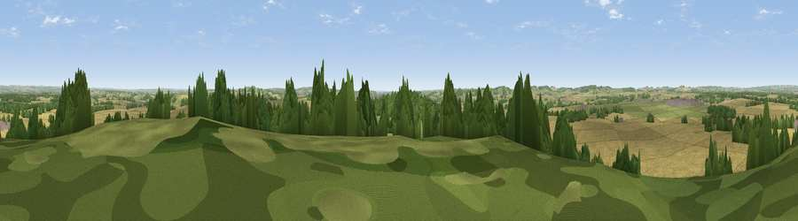

Viewpoint near Nether Wallop
#18687 in England · top 17% of its area beats it · near Nether WallopThe view, rendered

A 360° render of this exact spot computed from the terrain model, tree cover and land cover — summer colours, afternoon light, calibrated against photographs of famous viewpoints. Real trees, hedges and buildings will differ in detail.
The panorama
Grey silhouette: terrain skyline in each direction (720 bearings, Earth curvature and refraction included). Dashed green: skyline with trees (+15 m) and buildings (+8 m) as obstacles. Blue strip: how far the ground is visible on each bearing.
Where the view opens
Wedge length = distance to the farthest visible ground on that bearing (vegetation-aware). Rings at 10, 25 and 50 km.
What fills the view
60% cropland · 27% grassland · 12% woodland · 1% built-up
Angular shares of the visible panorama (visual magnitude), not map area. Landscape diversity 0.42 (0–1 Shannon).
Key numbers
More beautiful places nearby
The staircase of upgrades: each row has a higher view potential than everything closer. Driving times are estimates from straight-line distance, calibrated against real road routing — check an actual route before setting out.
| Place | Direction | Drive | Score |
|---|---|---|---|
| Viewpoint near Broughton | SW · 6 km | ~12 min | 60.5 |
| Kent's Wood | SW · 6 km | ~13 min | 60.9 |
| Viewpoint near Stockbridge | ESE · 6 km | ~13 min | 64.3 |
| Viewpoint near Sparsholt | SE · 12 km | ~22 min | 66.9 |
| Viewpoint near Bulford | WNW · 14 km | ~25 min | 70.3 |
| Beacon Hill | NE · 24 km | ~39 min | 76.7 |
| Martinsell viewpoint | NNW · 30 km | ~47 min | 77.3 |
| Viewpoint near Buriton | ESE · 43 km | ~63 min | 80.0 |
51.13744, -1.54007 · source: screening · position refined by local search. Computed location — check access rights before visiting.